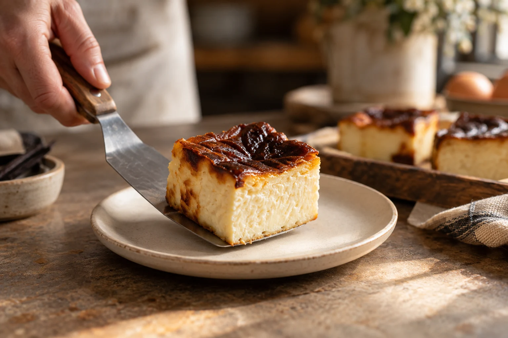
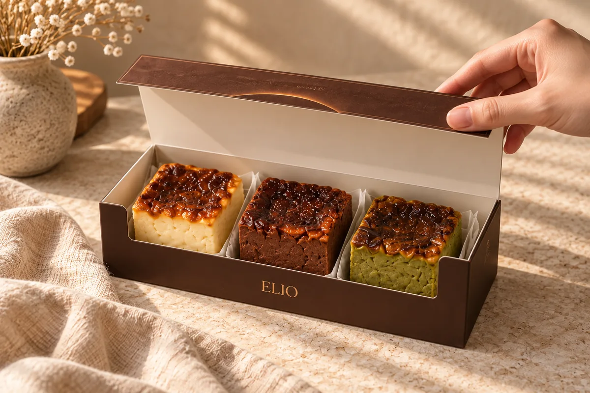
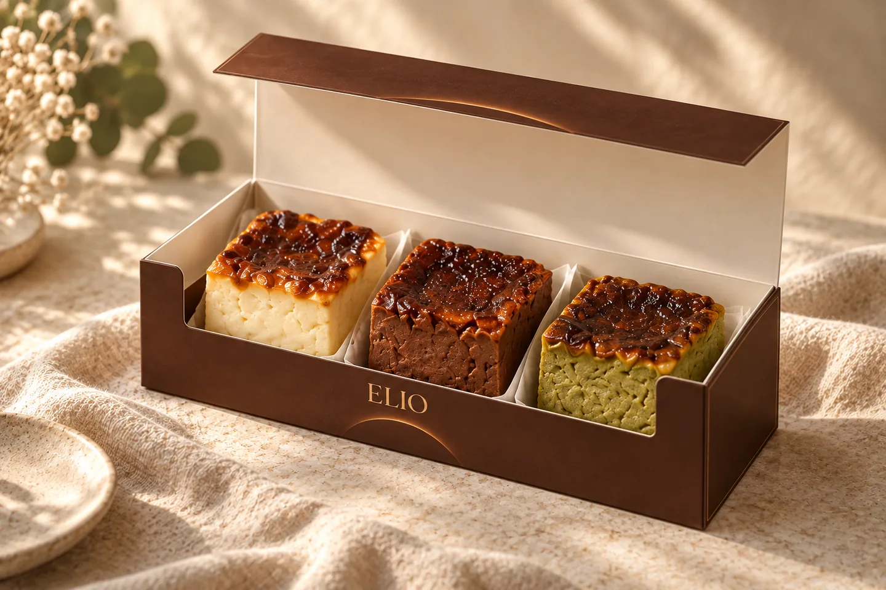

Our
story

A simple obsession
The idea behind Elio
A deeply caramelized top. A soft, custardy center. A little square of something lovely.
Elio is our take on Basque cheesecake: bold on the outside, delicate within. High heat, time, and the right balance give each square its beautifully burnt finish and creamy heart.
From classic Vanilla to earthy Matcha, every flavor has its own character. Presented three to a box, they’re made for discovering a favorite, sharing a little indulgence, or making someone’s day.
From TLB Kitchen
Elio is Basque cheesecake by TLB Kitchen. Our individual squares bring together contrasting textures, distinctive flavors, and the pleasure of a beautifully presented treat.
Something sweet for the everyday. Something thoughtful to share.

Burnt beautifully.
Soft within.
by TLB Kitchen.
Explore
the flavors
